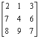
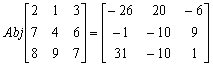
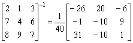

三階伴隨矩陣及行列式(I)
程式更新日期: 2008年3月15日
程式需要在 REG Lin 模式下執行，因此在選擇新程式位置後，按 5 1 選用REG Lin模式。
注意: 藍色的英文字為統計模式中的變數(Σx 按 Shift 1 2，Σy 按 Shift 1 → 2，Σxy 按 Shift 1 → 3)。
程式(112 bytes)
ClrStat: ?→A: ?→B: ?→C: ?→D: ?→X: ?→Y: ?→M:
A , X DT: ?→A: ?→X: X Σy - YA◢ CA - BX◢
BY - C Σy◢ YM - DX◢ Σx X - CM◢ CD - Σx Y◢
DA - Σy M◢ AnsC→C: BM - Σx A◢ YAns→Y:
Σxy - BD◢ AnsX + C + Y
程式另一版本(118 bytes): 這個版本會先顯示行列式，對於只計算三階行列式問題會較方便。
例題: 計算下列矩陣的伴隨矩陣及逆矩陣。

按 Prog 1 再按 2 EXE 1 EXE 3 EXE 7 EXE 4 EXE 6 EXE 8 EXE 9 EXE 7 EXE
(顯示 -26) EXE (顯示 20) EXE (顯示 -6) EXE
(顯示 -1) EXE (顯示 -10) EXE (顯示 9) EXE
(顯示 31) EXE (顯示 -10) EXE (顯示 1) EXE (顯示行列式的值為40)
因此，


計算完結後，請按Mode 1返回正常模式。
返回 CASIO fx-50FH、fx-3650P II、fx-50FH II及fx-50F PLUS 程式集